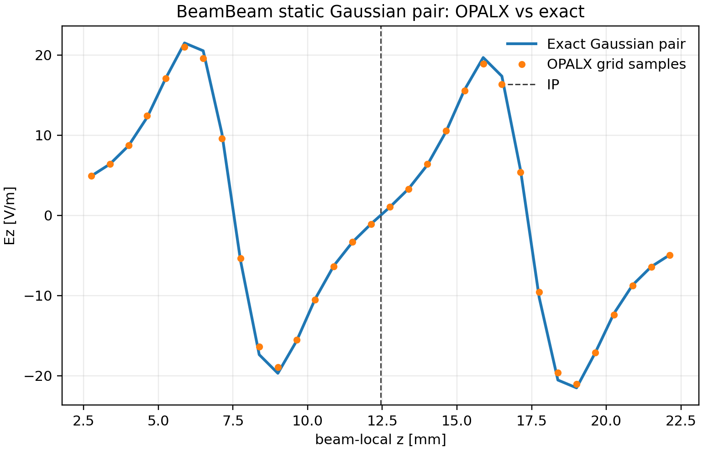

5 Beam-Beam
5.1 Theory of colliding beams in 3D
The BEAMBEAM element models the electromagnetic interaction of two counter-propagating bunches near an interaction point (IP). The validation problem used here isolates the field solve from the transport dynamics: the two bunches are represented in the solver frame as a static electrostatic pair of identical three-dimensional Gaussian charge densities. This is the correct manufactured solution for checking the density deposition, open-boundary Poisson solve, and electric-field reconstruction used by the beam-beam diagnostics.
Let the solver-frame coordinate be \(\mathbf r=(x,y,z)\). The OPALX bunch is centered at \(\mathbf c_1\), and the copied collision partner is obtained by mirror reflection about the local IP position \(z_{\mathrm{IP}}\), \[ \mathbf c_2 = \begin{pmatrix} c_{1x} \\ c_{1y} \\ 2z_{\mathrm{IP}} - c_{1z} \end{pmatrix}. \]
For the static validation case the total charge density is \[ \rho(\mathbf r) = \sum_{a=1}^{2} \frac{Q}{(2\pi)^{3/2}\sigma^3} \exp\!\left[ -\frac{|\mathbf r-\mathbf c_a|^2}{2\sigma^2} \right], \] where \(Q\) is the charge of one bunch and \(\sigma\) is the common rms size in all three spatial directions. OPALX solves \[ \nabla^2 \phi(\mathbf r) = -\frac{\rho(\mathbf r)}{\epsilon_0}, \qquad \mathbf E(\mathbf r) = -\nabla \phi(\mathbf r), \] with open boundary conditions. In the validation below no Lorentz transformation is applied: the comparison is deliberately performed in the solver frame against the electrostatic manufactured solution. Beam-energy parameters still appear in the input file because the normal OPALX tracking driver requires a reference beam, but the analytic field comparison is not a laboratory-frame boosted-field calculation.
5.2 Analytic solution
For a single spherical Gaussian bunch centered at \(\mathbf c\), define \[ \mathbf R = \mathbf r-\mathbf c, \qquad R = |\mathbf R|, \qquad u = \frac{R}{\sqrt{2}\sigma}. \] Convolving this density with the free-space Green function of Poisson’s equation gives the standard electrostatic Gaussian potential (Jackson 1999), \[ \phi_G(\mathbf r;\mathbf c,Q,\sigma) = \frac{Q}{4\pi\epsilon_0} \frac{\operatorname{erf}(u)}{R}, \] with the finite limiting value \[ \phi_G(\mathbf c;\mathbf c,Q,\sigma) = \frac{Q}{4\pi\epsilon_0}\frac{\sqrt{2/\pi}}{\sigma}. \] The electric field is \[ \mathbf E_G(\mathbf r;\mathbf c,Q,\sigma) = \frac{Q}{4\pi\epsilon_0} \frac{ \operatorname{erf}(u) - \sqrt{\frac{2}{\pi}}\frac{R}{\sigma} \exp\!\left(-\frac{R^2}{2\sigma^2}\right) }{R^3} \mathbf R, \] where the field vanishes at \(R=0\) by symmetry.
The analytic two-bunch manufactured solution is the linear superposition \[ \phi(\mathbf r) = \phi_G(\mathbf r;\mathbf c_1,Q,\sigma) + \phi_G(\mathbf r;\mathbf c_2,Q,\sigma), \] and \[ \mathbf E(\mathbf r) = \mathbf E_G(\mathbf r;\mathbf c_1,Q,\sigma) + \mathbf E_G(\mathbf r;\mathbf c_2,Q,\sigma). \] For equal bunch charges and symmetric placement, the exact field at the IP is zero: \[ \mathbf E(0,0,z_{\mathrm{IP}})=\mathbf 0. \] The useful scalar reference value is instead the longitudinal field at the center of one bunch due to the other bunch. With separation \(d = |\mathbf c_2-\mathbf c_1|\), this is \[ E_z(\mathbf c_1) = \frac{Q}{4\pi\epsilon_0} \frac{ \operatorname{erf}\!\left(\frac{d}{\sqrt{2}\sigma}\right) - \sqrt{\frac{2}{\pi}}\frac{d}{\sigma} \exp\!\left(-\frac{d^2}{2\sigma^2}\right) }{d^2} \operatorname{sgn}(c_{1z}-c_{2z}). \]
5.3 One-volt-per-meter test case
A special manufactured solution reads \[ \sigma = 1\,\mathrm{mm}, \qquad d = 10\,\mathrm{mm}, \qquad |Q| = 1.112650055\times 10^{-14}\,\mathrm{C}. \] For an electron bunch, \(Q<0\). With these parameters the field at the center of one bunch due to the copied partner is approximately \[ |E_z(\mathbf c_1)| = 1.0\,\mathrm{V/m}. \] At the IP the exact field remains zero by symmetry. The potential at the IP is approximately \[ \phi(0,0,z_{\mathrm{IP}}) = -3.9999977\times 10^{-2}\,\mathrm{V} \] for the electron-sign convention used in the OPALX input. This value is not a contradiction of the zero-field result: the electric field is the gradient of the scalar potential, so the equal and opposite gradients from the two bunches cancel at the IP, while the two scalar potential contributions add.
The OPALX run below uses a \(32^3\) open field-solver mesh and \(8N^3=262144\) macroparticles. The COPY=TRUE option instructs the BeamBeam element to build the mirrored bunch in the interaction window.
OPTION, PSDUMPFREQ = -1;
OPTION, STATDUMPFREQ = 1;
OPTION, BOUNDPDESTROY = 10;
OPTION, AUTOPHASE = 4;
OPTION, VERSION = 900;
TITLE, STRING="BeamBeam static Gaussian 1 V/m analytic validation ";
REAL N = 32;
REAL n_particles = 8*N*N*N;
REAL beam_bunch_charge = 1.112650055e-14;
REAL Edes = 0.25;
REAL gamma = (Edes+EMASS)/EMASS;
REAL beta = sqrt(1-(1/gamma^2));
REAL P0 = gamma*beta*EMASS;
DR1: DRIFT, L = 0.008425397, ELEMEDGE = 0.0;
BB1: BEAMBEAM, L = 0.02, ELEMEDGE = 0.008425397,
VISUALIZE=FALSE, COPY=TRUE;
DR2: DRIFT, L = 0.031574603, ELEMEDGE = 0.028425397;
myLine: Line = (DR1,BB1,DR2);
FS1: FIELDSOLVER, TYPE=OPEN,
NX=N, NY=N, NZ=N,
PARFFTX=TRUE, PARFFTY=TRUE, PARFFTZ=FALSE,
BCFFTX=OPEN, BCFFTY=OPEN, BCFFTZ=OPEN,
BBOXINCR = 1, GREENSF = STANDARD;
Dist1: DISTRIBUTION, TYPE=GAUSS,
SIGMAX=1e-3, SIGMAY=1e-3, SIGMAZ=1e-3,
SIGMAPX=1e-12, SIGMAPY=1e-12, SIGMAPZ=1e-12,
NPARTDIST = n_particles;
ES1: EMISSIONSOURCE, DISTRIBUTION = Dist1;
mySources: EMISSIONSOURCELIST = (ES1);
BEAM1: BEAM, PARTICLE = ELECTRON, pc = P0, NALLOC = n_particles,
SOURCES = mySources, BCHARGE = beam_bunch_charge, CHARGE = -1;
TRACK, LINE = myLine, BEAM = BEAM1,
MAXSTEPS = {4,15,3}, DT = {1e-11,3e-12,1e-11};
RUN, METHOD = "PARALLEL", FIELDSOLVER = FS1;
ENDTRACK;
QUIT;5.4 Results
The OPALX field diagnostics were compared directly to the analytic Gaussian pair on the same solver mesh. The active diagnostic snapshot used here has solver-frame centers \[ c_{1z}=7.49479585743\,\mathrm{mm}, \qquad c_{2z}=17.38792638917\,\mathrm{mm}, \] so the realized separation is \[ d_{\mathrm{OPALX}} = 9.89313053174\,\mathrm{mm}. \] This is close to, but not exactly, the nominal \(10\,\mathrm{mm}\) reference because the active BeamBeam window is entered on the tracker step sequence and the diagnostic samples the actual solver-frame geometry.
| Quantity | Relative \(L_2\) error | Maximum absolute error |
|---|---|---|
| \(\rho\) | \(5.221859\times 10^{-2}\) | \(5.746384\times 10^{-8}\,\mathrm{C/m^3}\) |
| \(\phi\) | \(3.042248\times 10^{-3}\) | \(1.087451\times 10^{-3}\,\mathrm{V}\) |
| \(E_x\) | \(1.503024\times 10^{-2}\) | \(8.676369\times 10^{-1}\,\mathrm{V/m}\) |
| \(E_y\) | \(1.582187\times 10^{-2}\) | \(8.807832\times 10^{-1}\,\mathrm{V/m}\) |
| \(E_z\) | \(2.427369\times 10^{-2}\) | \(1.031355\,\mathrm{V/m}\) |
At the nearest on-axis grid sample to the IP, the longitudinal field is \[ E_z^{\mathrm{analytic}} = 1.038298\,\mathrm{V/m}, \qquad E_z^{\mathrm{OPALX}} = 1.072345\,\mathrm{V/m}. \] Interpolating the same on-axis samples to the mathematical IP gives the symmetry check \[ E_z^{\mathrm{analytic}}(z_{\mathrm{IP}}) \approx -5.88\times 10^{-8}\,\mathrm{V/m}, \qquad E_z^{\mathrm{OPALX}}(z_{\mathrm{IP}}) \approx 3.77\times 10^{-6}\,\mathrm{V/m}. \] This confirms that the field at the interaction point is numerically consistent with the exact zero-field symmetry of the manufactured solution.

The remaining few-percent field differences are consistent with the stochastic macroparticle realization and the \(32^3\) mesh used in this diagnostic run. For a stricter regression test of the solver alone, the next step is to inject the analytic density directly on the mesh, bypassing particle sampling noise.
5.4.1 Reproducibility
The files needed to reproduce Figure 5.1 and the table above are stored with this manual in sections/beam-beam/reproducers/:
BeamBeam-static-1V.in: OPALX input deck for the static Gaussian-pair run.beam-beam-manufactured-solution.py: Python comparison script for the OPALX ASCII field diagnostics.README.md: compact command-line recipe.
The assumptions are that OPALX has already been cloned and built, and that the executable is available as build_openmp/src/opalx from the OPALX repository root. The Python environment must provide numpy, pandas, and matplotlib; in the OPALX development checkout this is typically the .venv-h6 environment.
From the OPALX repository root, copy the input deck into sandbox/ and run the single-rank OpenMP case:
REPRO=~/git/physics-manual-opalx/sections/beam-beam/reproducers
IN=sandbox/BeamBeam-static-1V.in
mkdir -p sandbox data/sandbox
cp "$REPRO/BeamBeam-static-1V.in" "$IN"
mpiexec -n 1 build_openmp/src/opalx --info 1 "$IN"The run writes active BeamBeam diagnostics under data/sandbox/. For the configuration documented here, the comparison uses
data/sandbox/BeamBeam-static-1V-RHO_scalar-beambeam_rho_pre-000003.dat
data/sandbox/BeamBeam-static-1V-PHI_scalar-beambeam_phi-000004.dat
data/sandbox/BeamBeam-static-1V-EF_vector-beambeam_e-000004.datRun the analytic comparison with
REPRO=~/git/physics-manual-opalx/sections/beam-beam/reproducers
D=data/sandbox
SCRIPT="$REPRO/beam-beam-manufactured-solution.py"
RHO="$D/BeamBeam-static-1V-RHO_scalar-beambeam_rho_pre-000003.dat"
PHI="$D/BeamBeam-static-1V-PHI_scalar-beambeam_phi-000004.dat"
EF="$D/BeamBeam-static-1V-EF_vector-beambeam_e-000004.dat"
python "$SCRIPT" \
--compare-rho-dump "$RHO" \
--compare-phi-dump "$PHI" \
--compare-e-dump "$EF" \
--sigma 1e-3The relevant output is the set of relative \(L_2\) errors for \(\rho\), \(\phi\), \(E_x\), \(E_y\), and \(E_z\), plus the on-axis value nearest to the IP. The reference values for this run are those listed in the results table above: \(\rho\) at about \(5.22\times 10^{-2}\), \(\phi\) at about \(3.04\times 10^{-3}\), and the field components at about \(1.5\times 10^{-2}\) to \(2.4\times 10^{-2}\) relative error. The line Ez(nearest grid sample to IP) should report approximately \(1.038298\,\mathrm{V/m}\) for the analytic value and \(1.072345\,\mathrm{V/m}\) for OPALX.
If the tracker step sequence or diagnostic naming changes, the numeric suffixes of the dump files may change. In that case choose the active beambeam_rho_pre, beambeam_phi, and beambeam_e files with matching diagnostic headers and with a solver-frame copied-bunch separation closest to \(10\,\mathrm{mm}\).